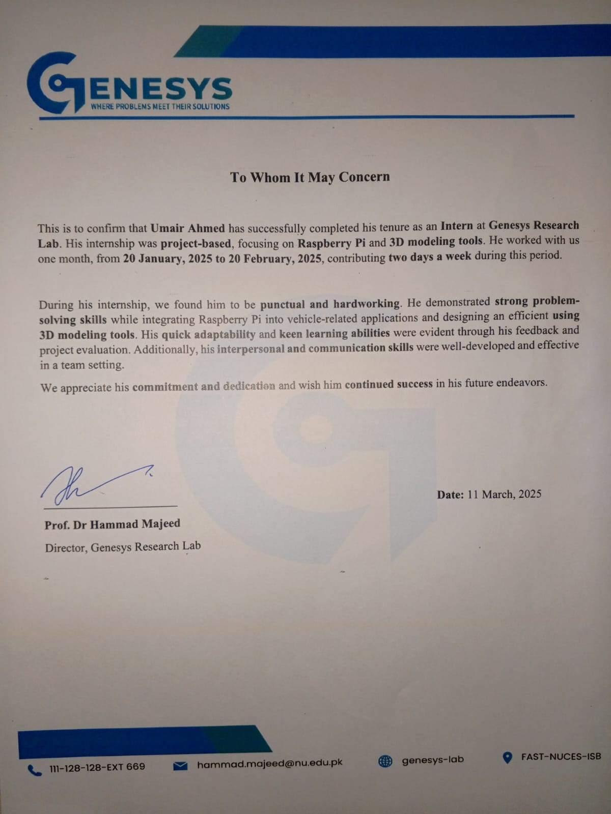

SEC. 04
Hands-On
Internships
Time spent inside real labs, working alongside researchers and engineers.

Add photos at:
assets/LUMS1.jpeg … LUMS4.jpeg
assets/LUMS1.jpeg … LUMS4.jpeg
1 / 4
Jul 9 – Aug 11, 2025
Research Internship (RISE)
SBASSE, LUMS — Electrical Engineering
Worked under Dr. Nauman Zaffar to develop an agricultural field monitoring system and a mobile ML training app.
Embedded SystemsMachine Learning

Add photo at:
assets/internship-fast.jpg
Embedded systems lab — FAST NUCES
assets/internship-fast.jpg
Jan 20 – Feb 28, 2025
Embedded Systems & ML Lab
FAST NUCES, Islamabad
Worked on 3D printing, rapid prototyping, and deploying ML models on Raspberry Pi 5.
Raspberry Pi3D Printing